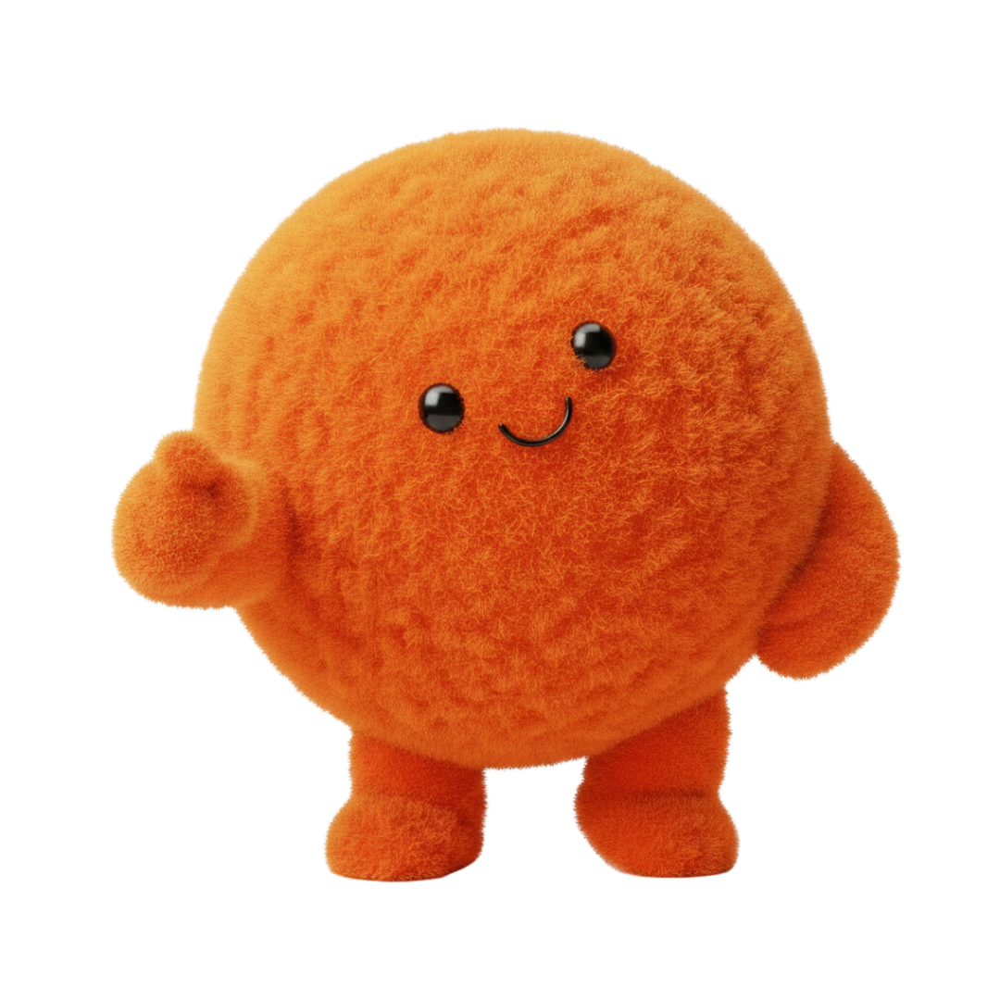
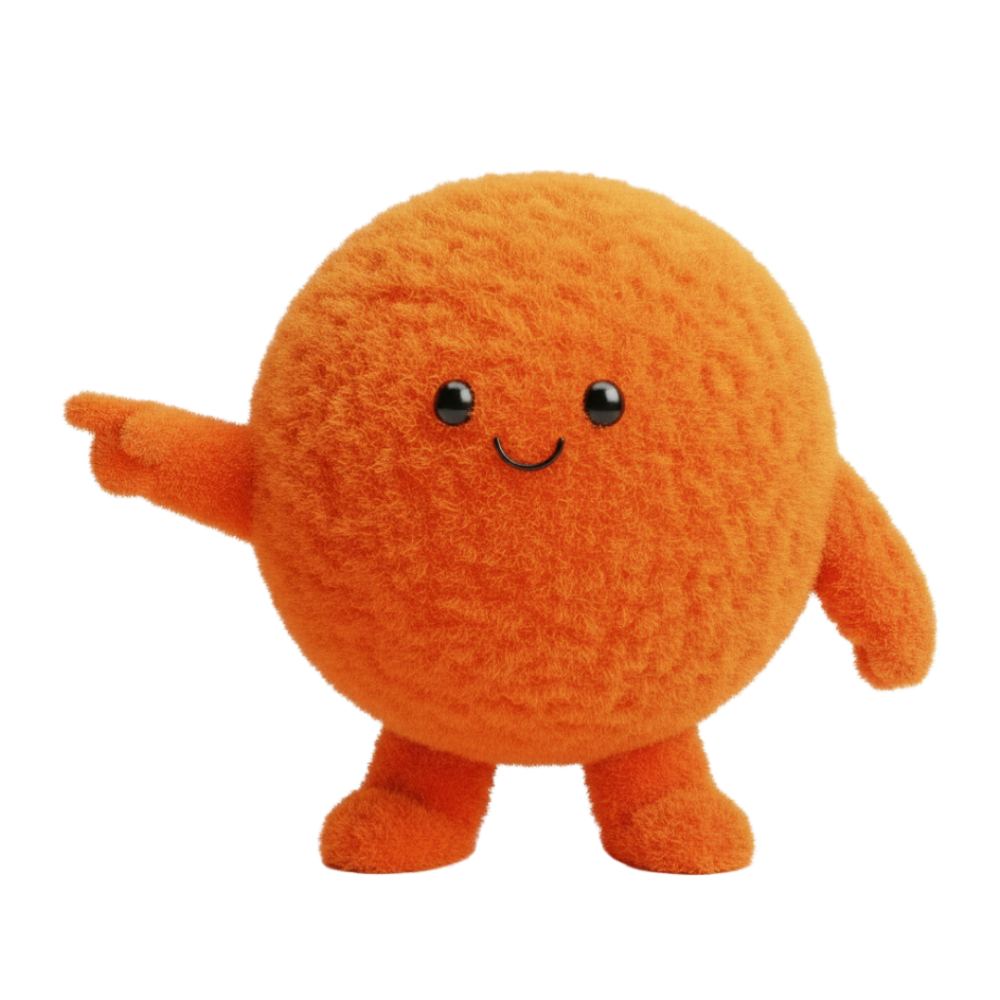

How to Practise Numbers to 20 at Home
Counting to 20 out loud is only part of the picture. Here's what else is involved, and simple ways to build it through everyday moments.
"Can my child count to 20?" often gets asked as if it's a single skill, but there are actually a few different things bundled together in that question:
- Saying number names — reciting "one, two, three..." in the right order, a bit like a rhyme.
- Recognising numerals — knowing that the symbol "7" means seven, by sight.
- Counting objects accurately — touching or pointing to each item once, and only once, while counting.
- Understanding quantity — knowing that the last number said is how many there are altogether, not just the last word in a list.
A child can often say numbers up to 20 confidently before all four of these are fully secure — and that's completely normal.
Before Moving to 20
Feeling secure with numbers up to 10 first tends to make the jump to 20 much smoother, mainly because the same skills — recognising numerals, counting accurately, understanding quantity — simply get applied to bigger amounts. There's no strict rule that a child must count to 10 perfectly before ever hearing the numbers up to 20; plenty of children hear and enjoy counting further while still building accuracy with smaller numbers. It's more useful to think of it as building confidence gradually than reaching an exact number by a fixed point.
7 Ways to Practise Numbers to 20
1. Number Hunt
Spot numbers up to 20 on car number plates, house doors and food packaging, saying each one out loud together.
2. Count Toys
Line up a group of toys and count them together, touching each one once as you go, up to whatever number you reach.
3. Put Number Cards in Order
Write numbers up to 20 on scraps of paper, muddle a handful up, and ask your child to put them back in the right order.
4. What's Missing?
Lay out a run of number cards (say 11 to 15) with one removed, and ask your child which number is missing.
5. One More / One Less
Say a number up to 20 and ask "what's one more?" or "what's one less?" — a quick, screen-free game that works anywhere.
6. Build Groups
Ask your child to build a group of a specific size — "can you get me 14 pasta shapes?" — then count together to check.
7. Count Everyday Objects
Stairs, buttons on a coat, grapes on a plate — real objects around the house give constant, low-pressure counting practice.

The numbers 11 to 19 often cause more mix-ups than any others, because their names don't always match their digits in an obvious way (say "fourteen" out loud and notice it starts with the "four" sound but is written with the 1 first). A little extra time here is normal, not a sign of a problem.
Counting Is More Than Saying Numbers
The technical term for touching one object per number word is one-to-one correspondence — but the idea is simple: each number said should match exactly one object counted. It's very common for children to say numbers faster than they touch objects, or to touch the same object twice, especially with bigger, less organised groups. Slowing down and counting together, rather than watching from a distance, is the easiest way to help this settle.
Common Difficulties
These are all completely typical while counting skills are still developing, and none of them suggest anything is wrong:
Common Questions
My child always gets stuck at the same number — why?
This is very common, especially around the "teen" numbers, since their names don't follow the same clear pattern as the numbers after 20. Practising just that stretch of numbers, a little more often, usually helps.
Should we move on to numbers past 20 once they've got to 20?
There's no need to rush ahead. Once numbers to 20 feel secure across counting, recognising and understanding quantity, moving further usually follows naturally.
Is it a problem if my child can count higher than 20 already?
Not at all — many children enjoy reciting numbers well beyond 20 for fun. It's worth checking, gently, whether counting real objects accurately keeps pace with reciting the number names.
Free Practice With Numbers
Our free Numbers to 10 activity is a great foundation for the same counting and recognition skills used up to 20.

No sign-up required — just open and play.
Related Guides
10 Easy Maths Games for Early Years Children
Ten simple, everyday games covering counting, comparing and patterns.
Read the GuideKS1 Maths: What Parents Need to Know
What comes after Early Years number work, once your child starts Year 1.
Read the Guide